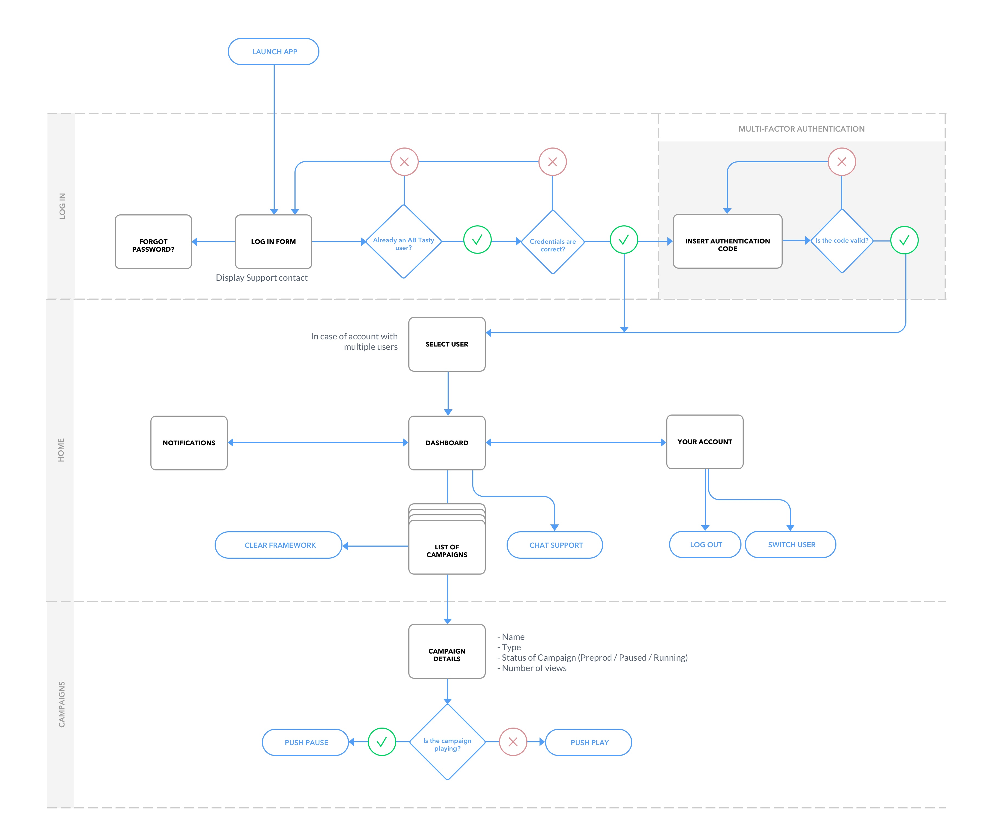
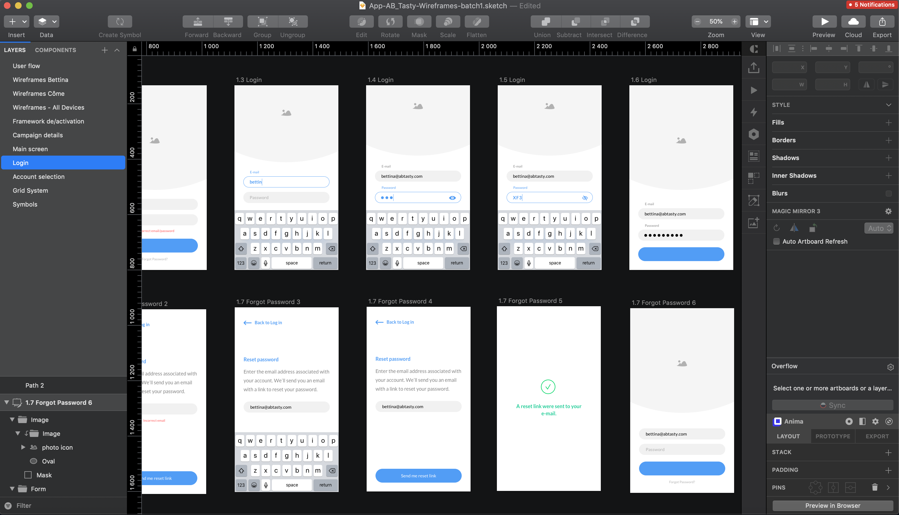

AB Tasty Companion app
This is the first mobile solution created by AB Tasty, thus the first mobile application developped by the company. AB Tasty is an all-inclusive B2B/SaaS tool for website and conversion rate optimization, personalization, user engagement, and A/B and MVT testing. Marketing, product and tech teams use AB Tasty’s solution to rapidly drive ROI and continuously deliver outstanding user experiences.
01/ Context
AB Tasty Companion is a B2B mobile application for AB Tasty end users to follow and monitor their campaigns on-the-go. We wanted to solve the problem of users being unable to take immediate action whenever there is a bug or any other critical error on their campaigns whenever they are away from their work environment, such as commuting in the train or away on holidays. This is a new approach for the company because it is a B2C product.
Target Audience: AB Tasty users, but more specifically CRO managers & consultants that use the tool on a daily-basis.
Product goals: Campaign monitoring in mobility (play and pause), user notification on important changes in their campaigns and account details. This is a first mobile application and we are developing a scalable framework to be enriched with new features in the future.
Metrics of Success: Number of downloads, users satisfaction (by survey & interview) and CSMs satisfaction (by survey & interview).
02/ Process
We started the research by studying our personas and user journey. One month before we started the project, another squad had done some intense research on our customers in order to update the the three main personas we have as established profiles of our main users. Therefore, we were able to use them on this project to start drawing the navigation structure for the app and the intended user journey for each persona.

Scenario 1: I had the opportunity to organise and document the whole project from end-to-end with the help of the PM, including not only UX design-related tasks (scope, research findings, UI guidelines) but also creating user stories and technical specifications for the developers and describing story telling scenarios for the product marketing team.

Scenario 2: One of the tests Samantha set up is not performing well, so her boss call her one day after work to complaint about the numbers and to suggest that perhaps AB Tasty tag is compromising the performance of the targeted pages. The only way to know the answer is removing the tag from their website, in order to assess where the problem comes from. Samantha opens her AB Tasty mobile application right away and clears the framework on the spot.

Scenario 3: It's Saturday morning and Samantha is at home with her family when she gets an urgent request to start a personalisation campaign that was on hold. With AB Tasty mobile app, she can play the campaign right away with only 2 clicks. The personalisation campaign is now running and Samantha can enjoy her breakfast at home.

03/ Solution phase
The project was happening at the same time as the UI revamp of the platform, so we had the incredible support from Morgane, the visual designer, to create the illustrations and visual assets for the app.
And here are some snapshots of the wireframes being built in Sketch.
04/ Outcome
We launched the Companion app version 1.0 for all AB Tasty customers in October 2018. The users should use the same credentials they already have for the desktop app, which means no registration is needed. They can simply download the app on their personal mobile devices.
- The Companion app is currently available on App Store and Google Play, only in English.
- And here is an article explaining how the app works.

05/ Challenges & Learnings
The company created a new team to work exclusively on this project. It was also the first project where I had to build something from scratch. I've worked on the research phase, wireframes, user testing, and also created the high-fidelity mockups and deliverables for the developers.
I had the opportunity to organise and document the whole project from end-to-end with the help of the PM, including not only UX design-related tasks (scope, research findings, UI guidelines) but also creating user stories and technical specifications for the developers and describing story telling scenarios for the product marketing team.
06/ Team
Product Manager: Julie Dumont
Product Designer: Bettina D'avila
Visual Designer: Morgane Ruaud
iOS Developer: Adel Ferguen
Android Developer: Raphaël Blanadet